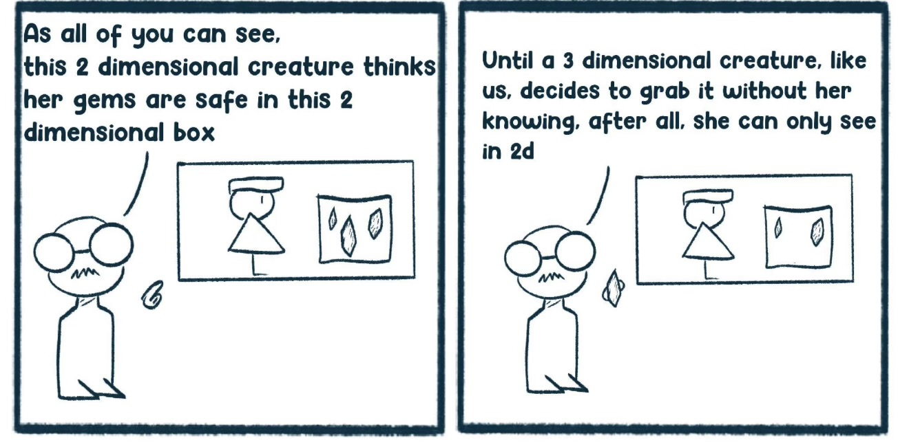
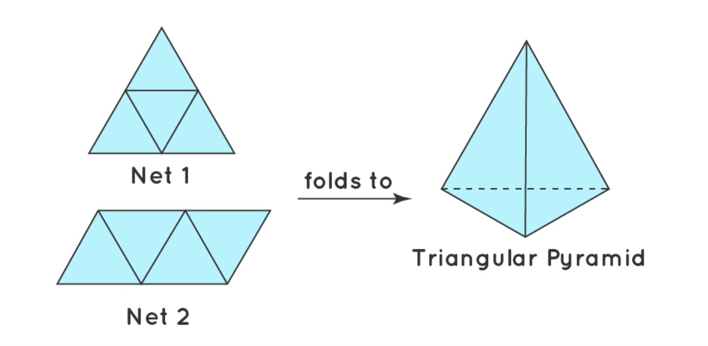
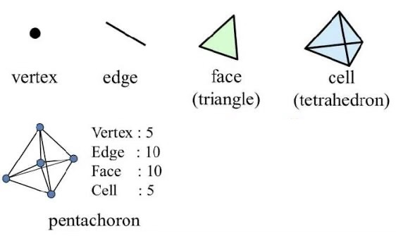

Why the Trinity?
When talking about the nature of God it is important to remember that we do not need logic and reason to come to the conclusion that God is a trinity. The scriptures speak for themselves, the trinity is the necessary conclusion of the following facts of scripture:
- God is one
- Jesus is God
- The Father is God
- The Holy Spirit is God
In order for all three to be true, the trinity is the necessary conclusion. It's not a man made idea, but rather an uncreated and eternal reality which is revealed to us in the Bible.
Basics of Spatial Dimensions
Examination of our current situation allows for much better comprehension of what it may be like to exist in higher or lower spatial dimension.
In our 3D world, we really only see a 2D projection of 3D objects. If you were seeing a true 3D projection you would see all of the object at once. A globe is the simplest example, because you cannot see the United States and China at the same time. You're not seeing a sphere (3D), you are seeing a circle (2D). A 2D representation of a 3D reality.
In a 2D world, they would be seeing a 1D representation of the 2D reality. It would be similar to you looking at the side of a business card, it appears as a 1D object. Simply a line.
A being of higher dimension can always interact with lower dimensions in a way that is impossible to those within its bounds. A fourth dimensional person could easily perform bloodless surgery, or remove food from your stomach without you seeing anything at all.
Sounds familiar doesn't it? Instant healing without seeing how it was done. Biblically we call this a healing miracle.
One dimensional beings cannot comprehend the second dimension, and they can see at best 0 dimensions from their perspective. A second dimensional being has the same ability to manipulate the 1D world as we do in the 2D world. In essence, a being in x dimension always witnesses reality from an x-1 viewpoint, and can act as an invisible agent in x-1 dimension.
How the Dimensions Help us Understand God
Three persons, all fully God, indivisible, one in essence, coeternal, and coequal. How can this be possible and still be monotheism?
Applying logic and reasoning can be helpful to a degree, but it ultimately leads us to the beautiful truth. The being which created the universe cannot be fully understood by our limited minds. Just as a 2D being cannot comprehend 3D reality, a limited mind cannot comprehend an unlimited mind.
Let's use our new wonderful knowledge of spatial dimensions to show that it is logically coherent, while admitting that we are forever limited in true understanding.
Additionally, it has been proven that dimensions greater than three have been mathematically shown to be logical and coherent. Long story short, the math works. More interestingly is that modern science (string theory) is wrestling with the idea that there may be up to ten or eleven dimensions! So when I start talking about fourth dimensional objects, know that it's not a false premise.
Start with a single point in space, this has zero dimensions. It does not constitute any actual thing, no substance. It indicates only a location.
Connect two points to form a line, which is the simplest idea of existence. This is the first dimension.
Fold the three lines into a triangle, you have a two dimensional object, made of three distinct pieces, but still one. This cannot be used to describe God because the sides are not all fully "triangle", it falls into a heresy called "partialism", and describes each person as being 1/3 God. This is the second dimension.
Connect four triangles and fold them into a tetrahedron. This cannot be used to describe God for the same reason listed above. You are here!
It takes five tetrahedrons (or triangular pyramids/cells) to make a 4D tetrahedron. This shape is also called a pentachoron or a 5-cell. Imagine them being "folded" in on one another to form the shape.
If I were to hand you five distinct physical tetrahedrons and then tell you they are all one, how confusing might that be? It sounds impossible and incoherent. Yet it is common knowledge that in geometry we can have a shape made up of five distinct tetrahedrons. They are all fully tetrahedron, but act together in unity, and are part of the same entity which is inseparable.
Now imagine if I handed you a 4D tetrahedron. The truth is that you can imagine all you want to, but you will never have real comprehension of it. This is the nature of God, far beyond comprehension. The God that created all three spatial dimensions must be outside of 3D space, ontologically speaking. Therefore, the nature of God is incomprehensible in His pure form. Far beyond my analogy of a 4D shape.
When the God of the Bible reveals information to us, it is revealed in a way that we can comprehend. God makes it clear that there are mysteries that are not meant for us to be known. If I wanted you to know about a 4D tetrahedron, and knew there was no way to show it in its true form, my explanation would be:
A shape that is one
A tetrahedron is the shape
A second tetrahedron is the shape
A third tetrahedron is the shape
A fourth tetrahedron is the shape
A fifth tetrahedron is the shape
Realize that calling the tetrahedron "the shape" actually doesn't fully reveal its true nature and leaves some mystery which cannot be answered. It demonstrates that the shape truly is something far more wonderful and interesting. Our minds require reference point that we can understand to point to a greater reality.
Compare again to the nature of the Trinity:
- God is one
- Jesus is God
- The Father is God
- The Holy Spirit is God
The only reference point we can cling to is personhood, God is one but not one person. The same way a 4D tetrahedron is one, but not one tetrahedron. Our tangible reference point of God being three persons simply points to a greater reality, much like the 4D tetrahedron. This does not mean that God is made of three lesser gods (partialism). It also doesn't mean that each person is a god on their own and can be separated (polytheism). It means our understanding of God is limited, and the true majesty of the Godhead is something that we can only behold after entering eternity.